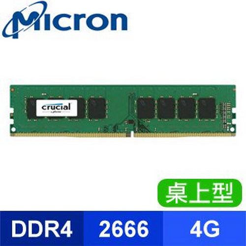

記憶體 Memory
電腦記憶體是一種利用半導體、磁性媒介等技術製成的儲存資料的電子裝置。其電子電路中的資料以二進位方式儲存，不同記憶體產品中基本單元的名稱也不一樣。
腦記憶體可分為記憶體（簡稱記憶體或主記憶體）和外部記憶體，其中記憶體是CPU能直接尋址的儲存空間，由半導體器件製成。記憶體的特點是存取速率快。我們平常使用的程式，如Windows作業系統、打字軟體、遊戲軟體等，一般都是安裝在硬碟等外存上的，但必須把它們調入記憶體中執行，才能真正使用其功能，我們平時輸入一段文字，或玩一個遊戲，其實都是在記憶體中進行的，資料產生後不斷地由記憶體向外存進行刷寫。就好比在一個書房裡，存放書籍的書架和書櫃相當於電腦的外存，而我們工作的辦公桌就是記憶體。通常我們把要永久儲存的、大量的資料儲存在外存上，而把一些臨時的或少量的資料和程式放在記憶體上，當然記憶體的好壞會直接影響電腦的執行速度。
揮發性記憶體
用DIMM記憶體製成固態硬碟
由揮發性記憶體製成的固態硬碟主要用於臨時性儲存。因為這類記憶體需要靠外界電力維持其記憶，所以由此製成的固態硬碟還需要配合電池才能使用。揮發性記憶體，例如SDRAM，具有存取速度快的特點。利用這一特點，可以將需要運行的程式從傳統硬碟複製到揮發性記憶體中，然後再交由電腦執行，這樣可以避免由於傳統硬碟的啟動延遲、搜尋延遲等對程式以及系統造成的影響。
由揮發性記憶體製成的固態硬碟通常會依靠電池來保證完成應急備份：當電源意外中斷時，靠電池驅動的這類固態硬碟可以有足夠的時間將資料轉移到傳統硬碟中。當電力恢復後，再從傳統硬碟中恢復資料
非揮發性記憶體
非揮發性記憶體的資料存取速度介於揮發性記憶體和傳統硬碟之間。和揮發性記憶體相比，非揮發性記憶體一經寫入資料，就不需要外界電力來維持其記憶。因此更適於作為傳統硬碟的替代品。
容量
記憶體以二進制計算容量，基本單位是Byte:
1Byte=8Bit
1KB=1024Bytes
1MB=1024KB
1GB=1024MB
1TB=1024GB
1PB=1024TB
1EB=1024PB
1ZB=1024EB
一個英文字母大約占1Byte
一個中文字大約占2Bytes
市面上規格
2GB: 於老電腦或一班機器的控制電腦中最為常見，由於科技進步，現今單條2GB記憶體在文書處理以上需求已不太夠用了
4GB: 由於價格便宜，最常用於一般的小電腦，但若無此需求，建議購買兩條4GB記憶體或直接上到8GB記憶體
8GB: 由於容量剛好可以支撐同時間多工作，價格又算親民，大多是ㄧ般名眾的首選
16GB: 若有影音編輯或電競的需求，建議上到此容量，若有散熱問體，可購買兩條GB代替
32GB或以上: 適用於追求頂級電競玩家或網站伺服器，若無此需求，建議不要購買
記憶體編號
現今市面上最常常見的，也是最新一代的DDR4記憶體，非常建議購買，較早一代的DDR3雖然速度略微比不上DDR4，但價格上便宜很多，之後的DDR2, DDR1和 SDRAM因過舊而不考慮，至於DDR4後會接上四個數字，分別是他的編號，只要數字越高，效能越好，但也相對較貴
